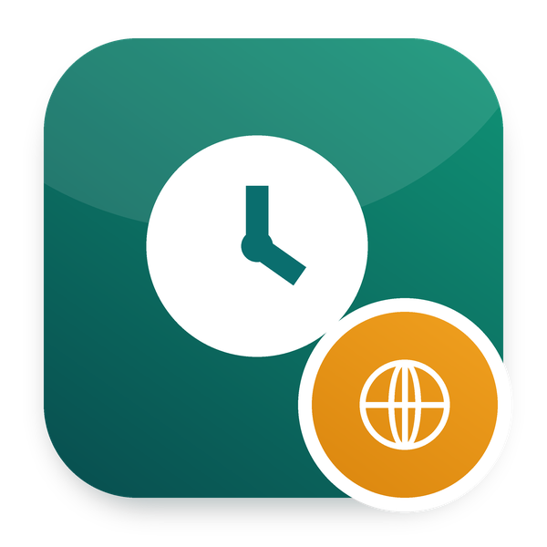

Employees see their shifts, claim open shifts, swap with colleagues and give the days they cannot work
Part of Odoo 20 HRMS - Odoo Mates · Odoo 20 Community and Enterprise
Their published shifts ahead, and the open shifts they may claim
Ask for a swap; the colleague accepts or declines it on the portal
Add or remove the days they are not available
/my/hr/shifts.Works with Odoo 20 Community and Odoo 20 Enterprise. On Enterprise, it cannot be installed together with the Enterprise Approvals app: both define the same records. Use one or the other.
om_hr_portal, om_hr_shift. It installs by itself once they are all installed.
Odoo Mates HR
The HR suite of Odoo Mates for Odoo 20: every module installs on its own, the links between them are bridges.
Support: odoomates@gmail.com